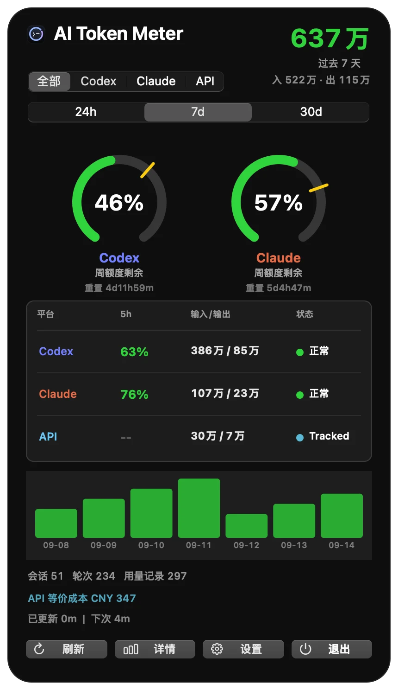

Quota and reset times
See remaining 5-hour and weekly quota from the available local runtime, with reset times kept distinct from local token counts.
Track OpenAI Codex, Codex CLI, and Anthropic Claude Code token usage, live quota, cache efficiency, models, and API-equivalent cost from your Mac menu bar.
Native macOS app. Free and open source.

See remaining 5-hour and weekly quota from the available local runtime, with reset times kept distinct from local token counts.
Break down input, output, cached input, fresh input, and cache hit rate across Codex and Claude Code.
Understand per-model usage and estimate what the same local tokens would cost at API-equivalent rates.
Find long-running conversations, context compaction pressure, active worktrees, and projects driving usage.
AI Token Meter reads Codex and Claude Code logs directly on your Mac. Prompts, code, token history, and conversations are not uploaded.
Free, open source, and built for macOS developers using AI coding agents.
Requires macOS 13 or later.